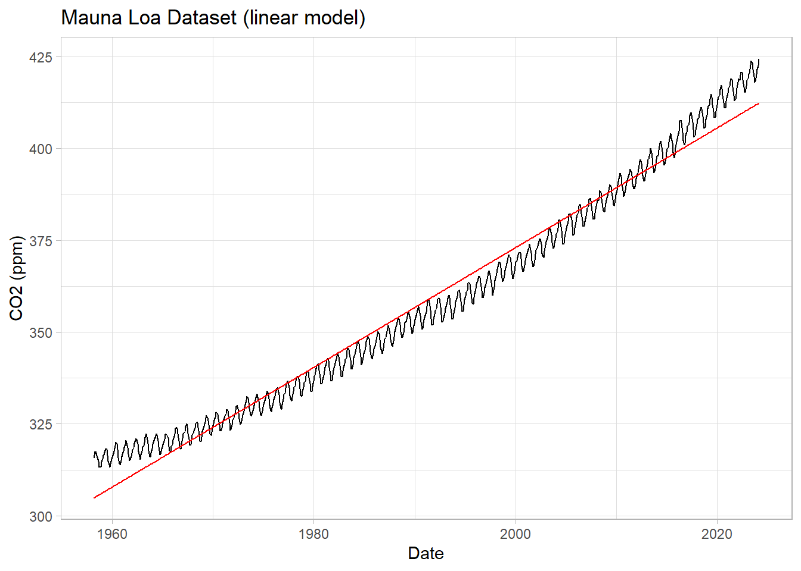
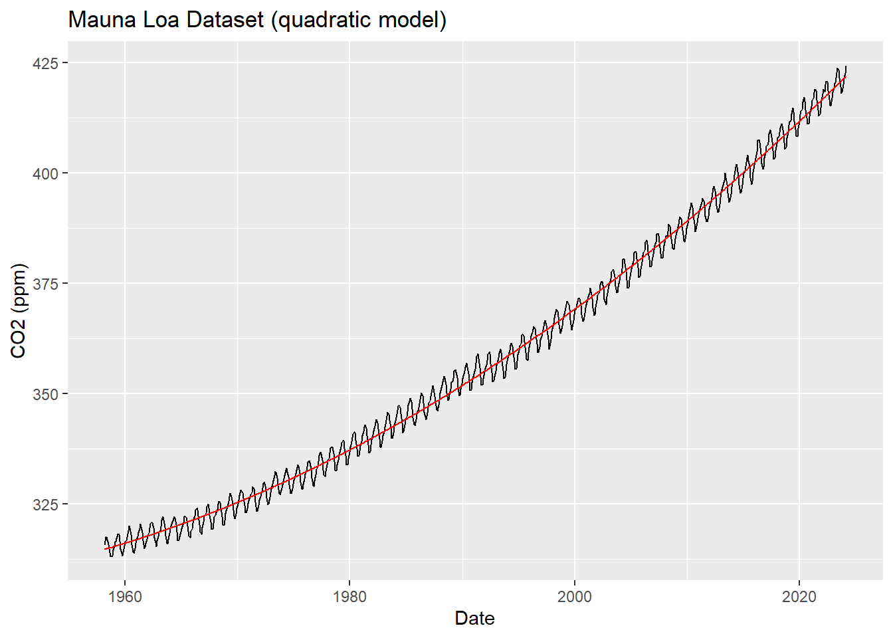
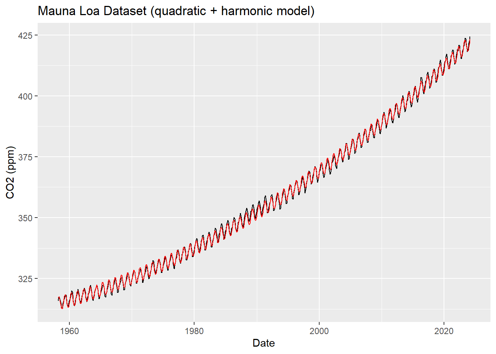
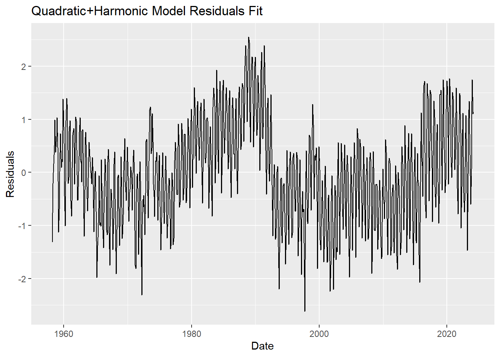
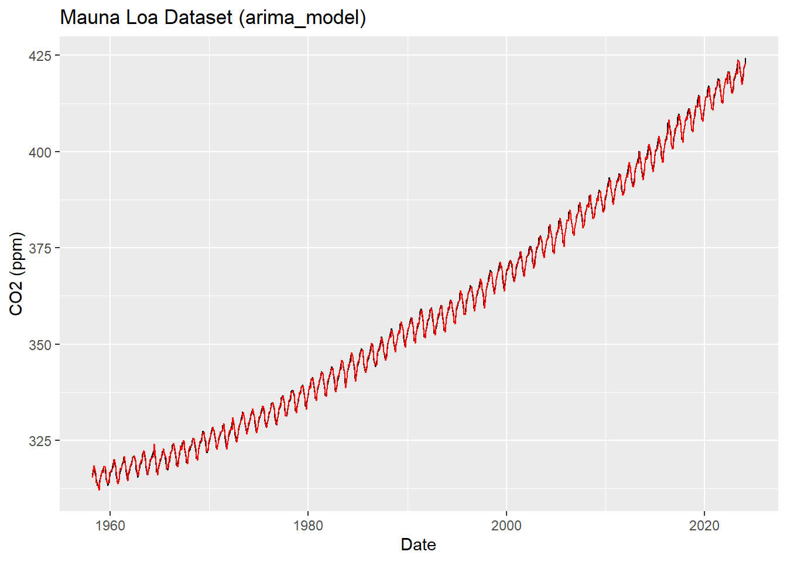

2.3 Trend Extraction
2.3.1 Linear trend model
The most obvious thing to do is to see if a linear trend might fit the data. In this case it’s likely to be a poor approximation, as the previous plot should make obvious. However, it will be an instructive benchmark for the finer modeling choices we’ll subsequently make.
We’ll use the built-in function lm() What is happening under the hood is a simple linear regression, which you don’t need to know much about at this stage. Specifically, we will use the OLS method. which relates a predictand y to a matrix of predictors X, called the design matrix.
First, we’ll omit the rows with NA values
##
## Call:
## lm(formula = CO2 ~ Date, data = df1)
##
## Residuals:
## Min 1Q Median 3Q Max
## -9.2678 -3.6110 -0.9021 3.1466 12.6589
##
## Coefficients:
## Estimate Std. Error t value Pr(>|t|)
## (Intercept) -2.887e+03 1.826e+01 -158.1 <2e-16 ***
## Date 1.630e+00 9.171e-03 177.7 <2e-16 ***
## ---
## Signif. codes: 0 '***' 0.001 '**' 0.01 '*' 0.05 '.' 0.1 ' ' 1
##
## Residual standard error: 4.88 on 785 degrees of freedom
## Multiple R-squared: 0.9758, Adjusted R-squared: 0.9757
## F-statistic: 3.159e+04 on 1 and 785 DF, p-value: < 2.2e-16For more information about what each term means, see this post
What information can you glean from this summary? What features would you check for in a visual inspection?
Let us look at the plot, shall we? How well does the time variable predict CO2?
df1 <-df1 %>%
mutate(linear_model = CO2model$fitted.values)
ggplot(data=df1, mapping=aes(x=Date, y=CO2)) +
geom_line() +
geom_line(data=df1, mapping=aes(x=Date, y=linear_model), inherit.aes = F, color="red") +
labs(title = "Mauna Loa Dataset (linear model)",
y="CO2 (ppm)") +
theme_light()
We see that the line captures the first order behavior of the series, but that leaves a lot to be desired. To zoom in, we can look at the residuals (original values - fitted values) as a function of fitted values:
df1 <-df1 %>%
mutate(linear_model_resids = CO2 - CO2model$fitted.values)
ggplot(data=df1, mapping=aes(x=Date, y=linear_model_resids)) +
geom_line() +
labs(title = "Linear Model Residuals Fit",
y="Residuals") +
theme_light()
To be quantitative, we can look at the Root Mean Squared Error of these residuals:
## [1] 4.874121This means that this linear trend is, on average, about 5ppm away from the measurements. Can we do better?
2.3.2 Quadratic fit
The second thing one might do is to add a quadratic term.
##
## Call:
## lm(formula = CO2 ~ Date + I(Date^2), data = df1)
##
## Residuals:
## Min 1Q Median 3Q Max
## -4.929 -1.781 0.099 1.814 5.013
##
## Coefficients:
## Estimate Std. Error t value Pr(>|t|)
## (Intercept) 5.035e+04 9.756e+02 51.61 <2e-16 ***
## Date -5.184e+01 9.800e-01 -52.90 <2e-16 ***
## I(Date^2) 1.343e-02 2.461e-04 54.57 <2e-16 ***
## ---
## Signif. codes: 0 '***' 0.001 '**' 0.01 '*' 0.05 '.' 0.1 ' ' 1
##
## Residual standard error: 2.229 on 784 degrees of freedom
## Multiple R-squared: 0.9949, Adjusted R-squared: 0.9949
## F-statistic: 7.718e+04 on 2 and 784 DF, p-value: < 2.2e-16df1 <-df1 %>%
mutate(quadratic_model = CO2_quadratic_model$fitted.values)
ggplot(data=df1, mapping=aes(x=Date, y=CO2)) +
geom_line() +
geom_line(data=df1, mapping=aes(x=Date, y=quadratic_model), inherit.aes = F, color="red") +
labs(title = "Mauna Loa Dataset (quadratic model)",
y="CO2 (ppm)") +
theme_light()
Let’s see the residuals and the RMSE for this model
## [1] 2.225216df1 <-df1 %>%
mutate(quadratic_model_resids = CO2 - CO2_quadratic_model$fitted.values)
ggplot(data=df1, mapping=aes(x=Date, y=quadratic_model_resids)) +
geom_line() +
labs(title = "Quadratic Model Residuals Fit",
y="Residuals") +
theme_light()
Does this improve the fit? By how much have we shrunk the RMSE of residuals?
It should be obvious from the simple visual inspection of the original series that there is a strong periodic component we are not currently capturing. It turns out to the a simple seasonal cycle: in spring/summer, the growth of terrestrial biomass in the Northern hemisphere sequesters CO2 away from the atmosphere, so the atmospheric CO2 concentrations goes down; the reverse happens in the Fall/Winter, where the fallen leaves are degraded and their organic carbon returned to mineral (CO2) form via respiration.
2.3.3 Harmonic waves
Let us thus define harmonic waves (sines and cosines) with a period of 1 year and add them to the design matrix.
xc<-cos(2*pi*df1$Date)
xs<-sin(2*pi*df1$Date)
fit.lm <- lm(CO2~Date + I(Date^2) + xc + xs, data = df1)
summary(fit.lm)##
## Call:
## lm(formula = CO2 ~ Date + I(Date^2) + xc + xs, data = df1)
##
## Residuals:
## Min 1Q Median 3Q Max
## -2.61346 -0.66340 -0.00194 0.61067 2.55221
##
## Coefficients:
## Estimate Std. Error t value Pr(>|t|)
## (Intercept) 5.042e+04 4.108e+02 122.72 <2e-16 ***
## Date -5.191e+01 4.127e-01 -125.80 <2e-16 ***
## I(Date^2) 1.344e-02 1.036e-04 129.75 <2e-16 ***
## xc -9.994e-01 4.737e-02 -21.10 <2e-16 ***
## xs 2.675e+00 4.729e-02 56.56 <2e-16 ***
## ---
## Signif. codes: 0 '***' 0.001 '**' 0.01 '*' 0.05 '.' 0.1 ' ' 1
##
## Residual standard error: 0.9388 on 782 degrees of freedom
## Multiple R-squared: 0.9991, Adjusted R-squared: 0.9991
## F-statistic: 2.185e+05 on 4 and 782 DF, p-value: < 2.2e-16## [1] 0.9358151df1 <-df1 %>%
mutate(harmonic_model = fit.lm$fitted.values)
ggplot(data=df1, mapping=aes(x=Date, y=CO2)) +
geom_line() +
geom_line(data=df1, mapping=aes(x=Date, y=harmonic_model), inherit.aes = F, color="red") +
labs(title = "Mauna Loa Dataset (quadratic + harmonic model)",
y="CO2 (ppm)") +
theme_light()
And the residuals…
df1 <-df1 %>%
mutate(harmonic_model_resids = CO2 - fit.lm$fitted.values)
ggplot(data=df1, mapping=aes(x=Date, y=harmonic_model_resids)) +
geom_line() +
labs(title = "Quadratic+Harmonic Model Residuals Fit",
y="Residuals") +
theme_light()
This should look better. Does it? By how much have we shrunk the RMSE of residuals (compared to the linear model)?
100*(1-sqrt(mean((df1$CO2 - fit.lm$fitted.values)^2))/sqrt(mean((df1$CO2 - CO2model$fitted.values)^2)))## [1] 80.8003380% improvement in the RMSE, that’s a big improvement!
2.3.4 Automated model
The forecast package can figure this out for us.
## Series: df1$CO2
## ARIMA(4,1,1) with drift
##
## Coefficients:
## ar1 ar2 ar3 ar4 ma1 drift
## 1.4940 -0.8538 0.0971 -0.0886 -0.8898 0.1369
## s.e. 0.0375 0.0645 0.0643 0.0369 0.0126 0.0077
##
## sigma^2 = 0.4665: log likelihood = -814.05
## AIC=1642.1 AICc=1642.24 BIC=1674.77
##
## Training set error measures:
## ME RMSE MAE MPE MAPE MASE
## Training set -0.0001132448 0.6799978 0.5402048 -0.003388041 0.1510635 0.4803613
## ACF1
## Training set -0.02630124df1 <-df1 %>%
mutate(arima_model = arima_model$fitted)
ggplot(data=df1, mapping=aes(x=Date, y=CO2)) +
geom_line() +
geom_line(data=df1, mapping=aes(x=Date, y=arima_model), inherit.aes = F, color="red") +
labs(title = "Mauna Loa Dataset (arima_model)",
y="CO2 (ppm)") +
theme_light()
This is an improvement on ou best RMSE with little work, but it’s a black box. This model is probably overfit, but we could turn some knobs to help prevent that if we spent some time with it.
Let’s make some use of our newfound time series modeling skills.